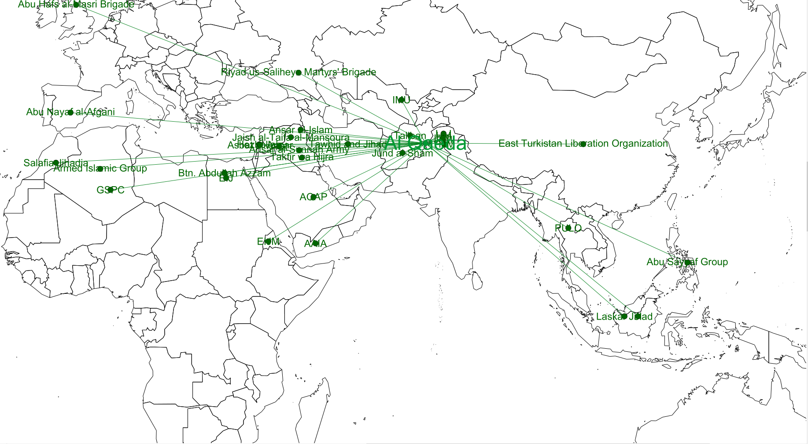
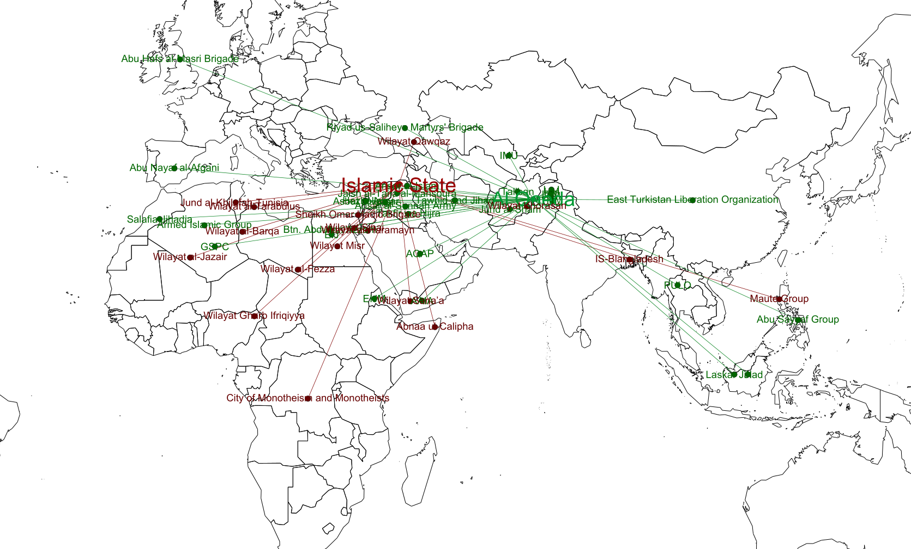

class: center, middle .title[Bipolar Jihadist World Order] .subtitle[How Competition between al Qaeda and IS shapes the Global Jihadist System] .author[Laila A. Wahedi] .institution[Georgetown University] .date[April 4, 2018] .center[] .footnote[Created with [{Remark.js}](http://remarkjs.com/) using [{Markdown}](https://daringfireball.net/projects/markdown/) + [{MathJax}](https://www.mathjax.org/) + [{Liminal}](http://www.jmlilly.net/liminal.zip)] --- class: center # Al Qaeda Network: 2000's  .footnote[ Follow along at Wahedi.US, under Current Presentation Laila A. Wahedi, PhD -- @lwahedi -- law98@georgetown.edu] --- class: center # Jihadist Network Today  .footnote[ Follow along at Wahedi.US, under Current Presentation Laila A. Wahedi, PhD -- @lwahedi -- law98@georgetown.edu] --- class: center background-color:#000000 .footnote[Follow along at Wahedi.US, under Current Presentation Laila A. Wahedi, PhD -- @lwahedi -- law98@georgetown.edu] <h1 style="text-transform: none; color:white; text-align:left; margin-bottom:0px">Anarchy</h1> <img class="plain" src="../figures/line.png" style="float:left; padding:0;margins:0;margin-bottom:0px; align:left; height: 5px; width:75%"> <div style="width:32%; float:left"> <h3 style="color:white;">No Contract Enforcement</h3> </div> <div style="width:32%; float:left"> <h3 style="color:white;">Competition Over Resources</h3> </div> <div style="width:32%; float:left"> <h3 style="color:#FAFF75;">Proximity Matters</h3> </div> </div> --- class: left background-color:#FAFF75 .footnote[ Follow along at Wahedi.US, under Current Presentation Laila A. Wahedi, PhD -- @lwahedi -- law98@georgetown.edu] <h1 style="text-transform: none; margin-bottom:0px;text-align:left;">Local and Global Actors</h1> <img class="plain" src="../figures/line.png" style="float:left; padding:0;margins:0;margin-bottom:0px; align:left; height: 5px; width:75%"> * Local Actors: * Compete with proximate actors # * Global Actors * Need local help to operate locally * Compete with one another --- class: center background-color:#FAFF75 .footnote[Follow along at Wahedi.US, under Current Presentation Laila A. Wahedi, PhD -- @lwahedi -- law98@georgetown.edu] <h1 style="text-transform: none; text-align:left; margin-bottom:0px">Local and Global Actors</h1> <img class="plain" src="../figures/line.png" style="float:left; padding:0;margins:0;margin-bottom:0px; align:left; height: 5px; width:75%"> <div> <div style="width:50%; float:left;background-color:#01BAEF"> <img style="width:75%" src="../figures/bipolarity/global_actors.png"> <h3 style="color:white;">Global Actors</h3> </div> <div style="width:50%; float:left;background-color:#AF002B">  <h3 style="color:white;">Local Actors</h3> </div> </div> --- class: center background-color:#01BAEF .footnote[Follow along at Wahedi.US, under Current Presentation Laila A. Wahedi, PhD -- @lwahedi -- law98@georgetown.edu] <h1 style="text-transform: none; color:white; text-align:left; margin-bottom:0px">Competition Over Global Power</h1> <img class="plain" src="../figures/line.png" style="float:left; padding:0;margins:0;margin-bottom:0px; align:left; height: 5px; width:75%"> <div style="width:24.5%; float:left"> <h3 style="color:white;">Audience</h3> </div> <div style="width:24.5%; float:left"> <h3 style="color:white;">Legitimacy</h3> </div> <div style="width:24.5%; float:left"> <h3 style="color:white;">Network Goods</h3> </div> <div style="width:24.5%; float:left"> <h3 style="color:white;">Brokerage</h3> </div> --- class: center background-color:#01BAEF .footnote[Follow along at Wahedi.US, under Current Presentation Laila A. Wahedi, PhD -- @lwahedi -- law98@georgetown.edu] <h1 style="text-transform: none; color:white; text-align:left; margin-bottom:0px">Brokerage</h1> <img class="plain" src="../figures/line.png" style="float:left; padding:0;margins:0;margin-bottom:0px; align:left; height: 5px; width:75%"> <div style="width:50%; float:left"> <h2 style="color:white;">Leverage</h2> <h3 style="color:white;">Power to cut a group off from the network</h3> </div> <div style="width:50%; float:left"> <h2 style="color:white;">Competitor</h2> <h3 style="color:white;">Global competitor provides alternative access</h3> </div> <h2 style="color:white;">Competition with IS reduces both IS and al Qaeda leverage</h2> --- class: center background-color:#FAFF75 .footnote[Follow along at Wahedi.US, under Current Presentation Laila A. Wahedi, PhD -- @lwahedi -- law98@georgetown.edu] <h1 style="text-transform: none; text-align:left; margin-bottom:0px">Effects of Bipolarity</h1> <img class="plain" src="../figures/line.png" style="float:left; padding:0;margins:0;margin-bottom:0px; align:left; height: 5px; width:75%"> <div> <div style="width:50%; float:left;background-color:#01BAEF">  <h3 style="color:white;">Global Actors</h3> </div> <div style="width:50%;height:100%; float:left;background-color:#AF002B">  <h3 style="color:white;">Local Actors</h3> </div> </div> --- class: center background-color:#AF002B .footnote[Follow along at Wahedi.US, under Current Presentation Laila A. Wahedi, PhD -- @lwahedi -- law98@georgetown.edu] <h2 style="text-transform: none; color:white; text-align:left; margin-bottom:0px">Paired Comparison: <br> al Shabaab & Boko Haram</h2> <img class="plain" src="../figures/line.png" style="float:left; padding:0;margins:0;margin-bottom:0px; align:left; height: 5px; width:75%"> <div style="width:50%; float:left"> <img style="width:50%;" src="../figures/bipolarity/shabaab.png"> <h2 style="color:white;">al Shabaab</h2> </div> <div style="width:50%; float:left"> <h2 style="color:white;">Boko Haram</h2> </div> <h2 style="color:white;">Why did they diverge?</h2> --- class: center background-color:#AF002B .footnote[Follow along at Wahedi.US, under Current Presentation Laila A. Wahedi, PhD -- @lwahedi -- law98@georgetown.edu] <div style="width:10%; float:left"> <img style="width:100%;float:left" src="../figures/bipolarity/shabaab.png"> </div> <h4> </h4> <h1 style="text-transform: none; color:white; text-align:left; margin-bottom:0px">al Shabaab</h1> <img class="plain" src="../figures/line.png" style="float:left; padding:0;margins:0;margin-bottom:0px; align:left; height: 5px; width:75%"> <h2 style="color:white;text-align:left">Expectations</h2> <ul style="color:white;text-align:left"> <li>IS recruitment</li> <li>Tensions among factions within al Shabaab</li> <li>IS targeting al Shabaab if they remain loyal to al Qaeda</li> </ul> <h2 style="color:white;text-align:left">Observations</h2> <ul style="color:white;text-align:left"> <li>IS media campaign to attract al Shabaab leadership and members</li> <li>Internal purges to prevent defection, one independent commander succeeds with 20 fighters.</li> <li>IS uses Puntland toehold to build opposition to al Shabaab</li> </ul> --- class: center background-color:#AF002B .footnote[Follow along at Wahedi.US, under Current Presentation Laila A. Wahedi, PhD -- @lwahedi -- law98@georgetown.edu] <div style="width:10%; float:left"> </div> <h4> </h4> <h1 style="text-transform: none; color:white; text-align:left; margin-bottom:0px">Boko Haram</h1> <img class="plain" src="../figures/line.png" style="float:left; padding:0;margins:0;margin-bottom:0px; align:left; height: 5px; width:75%"> <h2 style="color:white;text-align:left">Expectations</h2> <ul style="color:white;text-align:left"> <li>IS recruitment</li> <li>Tensions among factions</li> </ul> <h2 style="color:white;text-align:left">Observations</h2> <ul style="color:white;text-align:left"> <li>IS recruits Boko Haram</li> <li>Al Qaeda loyal forces formally split </li> </ul> --- class: left background-color:#FAFF75 <h2 style="margin-bottom:0px; padding:0px" align="left">Systemic Implications </h2> <img align="left" class="plain" src="../figures/line.png" style="padding:0;margins:0;margin-bottom:.5em; align:left; height: 5px; width:75%"> <br> <img align="right" style="width:50%" src = "../figures/worldNetworkImage.png"> * Competition between IS and al Qaeda playing out among affiliates * Fracturing as local competitors get new sponsorship options * Challenge for IS to challenge al Qaeda's global network <br><br><br><br><br><br><br><br><br><br> <div>Icons made by or adapted from<a href="http://www.freepik.com" title="Freepik">Freepik</a> from <a href="https://www.flaticon.com/" title="Flaticon">www.flaticon.com</a> is licensed by <a href="http://creativecommons.org/licenses/by/3.0/" title="Creative Commons BY 3.0" target="_blank">CC 3.0 BY</a></div> .footnote[Follow along at Wahedi.US, under Current Presentation Laila A. Wahedi, PhD -- @lwahedi -- law98@georgetown.edu]